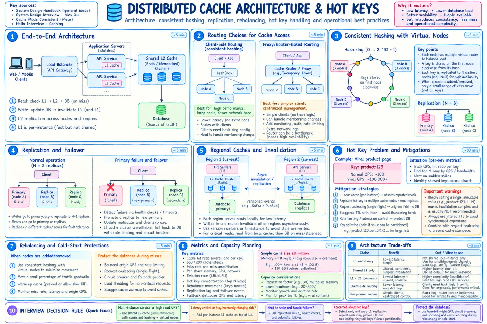

Topic · Caching in Depth
Distributed Cache Architecture
Routing, partitioning, replication, rebalancing, and hot keys - plus when to pick Redis or Memcached.


Quick Revision
- Needs routing, sharding, replication, failover, hot-key handling, origin protection.
- Client routing = fewer hops; proxy routing = simpler clients, extra hop.
hash % Nremaps most keys; consistent hashing or hash slots (Redis: 16,384) move only a slice.- Replicate across the failures you must survive; decide if stale replica reads are OK.
- A hot key can melt one shard even at a great hit ratio.
Architecture
- Client-side routing - library knows membership; high throughput; every client handles topology changes and stale metadata.
- Proxy routing - stable endpoint; central policy, auth, metrics; extra hop and its own scaling/failure.
- Partitioning - consistent hashing + virtual nodes (balance, weighted capacity) or fixed hash slots. See Consistent Hashing.
- Replication & failover - distinct nodes/racks/zones; health checks without flapping; promote replica; bound origin fallback; rebuild replicas gradually.
- Rebalancing - move only affected slots, stream in background, dual-read/forward during migration, warm new owners, watch miss amplification and origin QPS.
Hot keys
- Detect - per-key and per-shard QPS, bytes, CPU, latency; top-N keys; skew alerts; per-key hit ratio.
- Mitigate - L1 near-cache; replicate the value across nodes; request coalescing; CDN if public; rate-limit abuse; split only partitionable values; dedicated tier for viral keys.
- Careful - salting
key:0..Nneeds invalidation across every copy. - Redis vs Memcached - Memcached for simple ephemeral objects; Redis for data structures, TTLs, atomic scripts, replication, cluster. Choose by semantics, not speed claims.
Trade-offs
| Choice | Benefit | Cost / risk |
|---|---|---|
| Client-side routing | One fewer hop, high throughput | Complex clients, topology refresh |
| Proxy routing | Simple clients, central controls | Extra hop, proxy bottleneck |
| Consistent hashing | Limited remapping | Virtual-node metadata, migration tuning |
| Fixed hash slots | Explicit ownership, controlled migration | Slot management; multi-key needs co-location |
| Replicate hot key | Spreads reads | More invalidation copies, divergence |
| Salt/split key | Spreads partitionable load | Aggregation and consistency complexity |
Failure modes
- Hot key overloads a shard - L1, replicated value, coalescing, CDN, dedicated tier.
- Rebalance remaps too much - consistent hashing/slots, virtual nodes, gradual migration.
- Uneven shards evict early - per-shard metrics, weighted ownership, reshard, isolate tenants.
Interview practice
Answer aloud, then reveal.
Microsoft (Feb 2026) / ServiceNow Staff: design a distributed cache like Redis.
Clarify GET/PUT/DELETE, TTL, capacity, p99, consistency, durability. Then routing, partitioning, replication, eviction, failover, rebalancing, hot keys, origin fallback, metrics.
Microsoft SDE II L61 (2025): distributed LRU cache - HLD + LLD + tests.
Separate API, routing, storage, eviction, clock/TTL, loader, replication. Per-shard LRU, not one global lock. Test hit/miss, update, eviction, expiry, races, node loss, rebalance.
Microsoft L61 (Nov 2025): PhotoCache as LRU, then single vs distributed.
Single node: digest → value, HashMap + DLL, capacity, TTL. Distributed: namespace, shard by key, replicas, topology-aware client/proxy, hot keys, versioned invalidation, failover, monitoring.
Client-side or proxy routing?
Client removes a hop and scales with clients; proxy centralizes topology and policy but adds a tier to scale.
How do you choose replicas?
Place copies across the failures you need to survive, not just separate processes on one host; decide on stale replica reads.
How do you migrate the key format?
Dual-read old/new, populate new on hit, dual-invalidate, monitor, drop old keys after max TTL. Avoid mass deletes.